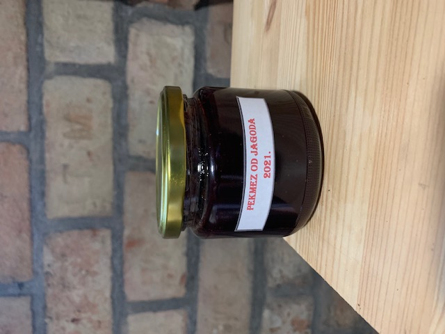
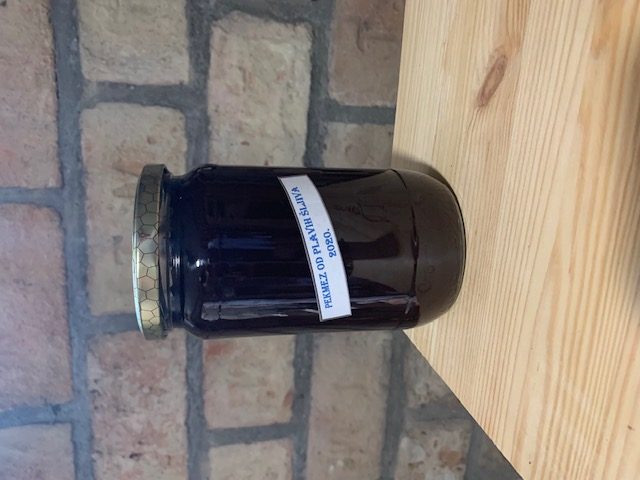
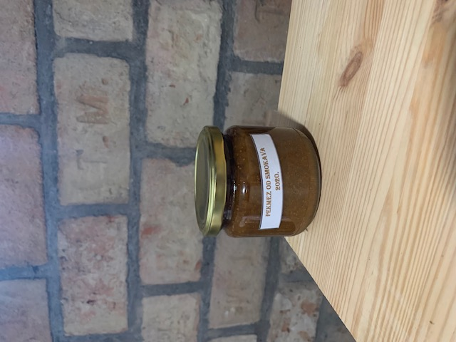
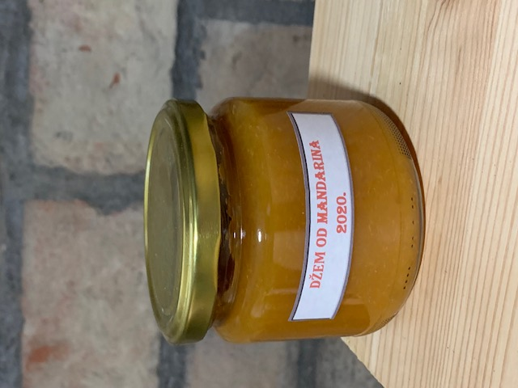
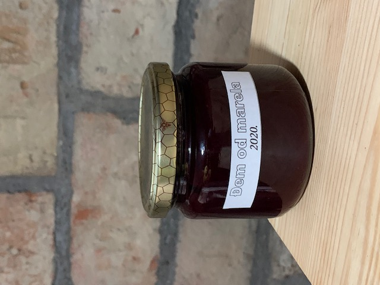

Pekmez je vrsta slatkog namaza koji nastaje ukuhavanjem svježeg voća u koji se ne mora dodavati šećer ili može, ali u malim količinama. Osim pekmeza proizvodimo i džemove koji su najslađi slatki namaz.

PEKMEZ OD JAGODA
Napravljen od domaćih jagoda iz našeg vrta uz minimalan dodatak šećera i svježeg limuna.

PEKMEZ OD PLAVIH ŠLJIVA
Kuhan na starinski način u kotluši od domaćih plavih šljiva.

PEKMEZ OD SMOKAVA
Napravljen od domaćih svježih smokava iz našeg vrta uz dodatak svježeg limunovog soka.

DŽEM OD MANDARINA
Napravljen od domaćih mandarina i domaćih dunja.

PEKMEZ OD ARONIJA I KUPINA
Napravljen od aronije i kupine iz našeg vrta. Aronija je prije kuhanja samljevena, a prokuhana kupina procijeđena te je dobivena smjesa kuhana.

DŽEM OD MARELA
Napravljen od domaćih marela uz minimalan dodatak šećera.